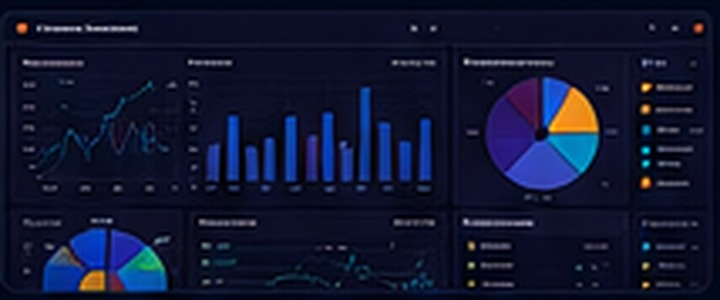
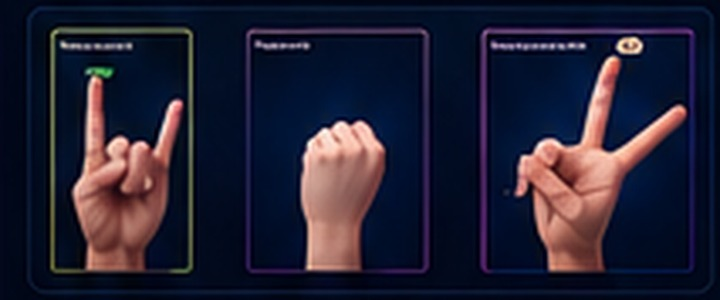

AI Solutions
Designing intelligent solutions that turn real-world challenges into structured, usable systems.
Hi, I'm
Passionate about transforming data into intelligent solutions through machine learning, data analytics, and AI-driven technologies. I enjoy building practical systems that solve real-world challenges while continuously exploring emerging technologies.
Practical, data-driven solutions designed around real needs and measurable outcomes.
Designing intelligent solutions that turn real-world challenges into structured, usable systems.
Developing, evaluating, and improving predictive models with a focus on reliable performance.
Transforming complex data into clear insights that support better decisions and practical action.
I focus on building data-driven and AI-powered solutions for real-world problems in a structured, scalable way. I begin by understanding the challenge and analyzing the data, then select the right approach and turn results into clear, practical solutions that create meaningful value. I continuously develop my skills and explore emerging technologies to build more efficient and impactful systems.
Explore My Journey›I analyze the problem and define its goals before selecting tools or models, ensuring the solution addresses the real need.
I use analysis and discovered patterns to guide decisions and build solutions grounded in evidence.
I design practical solutions that can be improved and expanded as requirements and projects evolve.
I strengthen my capabilities through hands-on projects, experimentation, and continuous exploration of modern technologies.

End-to-end ML pipeline to predict loan default risk on 307K+ applicants using LightGBM, SMOTE and SHAP.
View on GitHub◉ML model to predict customer churn with feature engineering and Random Forest, achieving ROC-AUC of 0.84.
View on GitHub◉
Image classification web app using Teachable Machine and TensorFlow.js. Recognizes rock, paper and scissors from user gestures.
View on GitHub◉Designed and implemented a relational database for course registration using Oracle SQL and EER modeling.
View on GitHub◉Taibah University
Focused on AI, Machine Learning, Data Science, and Intelligent Systems.Data Analysis Camp Organization, Saudi Statistical Association
Google Developer Student Club (GDSC)
Native
Intermediate
PREHACK in collaboration with IBM SkillsBuild
IBM (Coursera)
IBM SkillsBuild
Thakaa Center — 16 hours
IBM (Coursera)
IEEE Club, Taibah University — 6 hours
Taibah University — 3 hours
I'm always open to discussing new opportunities, collaborations, and interesting projects.